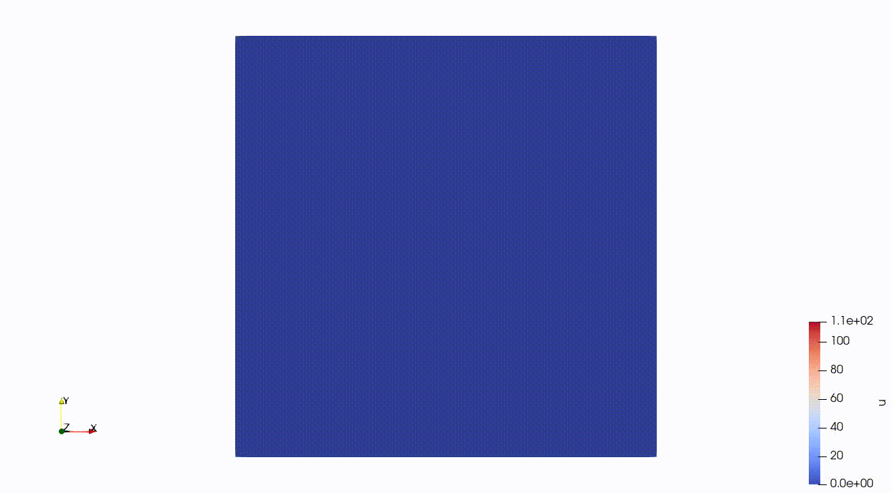

Time Dependent Problems

Figure 1: Visualization of the temperature time evolution on a unit square where the prescribed temperature on the upper and lower parts of the boundary increase with time.
This example is also available as a Jupyter notebook: transient_heat_equation.ipynb.
Introduction
In this example we extend the heat equation by a time dependent term, i.e.
\[ \frac{\partial u}{\partial t}-\nabla \cdot (k \nabla u) = f \quad x \in \Omega,\]
where $u$ is the unknown temperature field, $k$ the heat conductivity, $f$ the heat source and $\Omega$ the domain. For simplicity we set $f = 1$ and $k = 1$. We define homogeneous Dirichlet boundary conditions along the left and right edge of the domain.
\[u(x,t) = 0 \quad x \in \partial \Omega_1,\]
where $\partial \Omega_1$ denotes the left and right boundary of $\Omega$.
Further, we define heterogeneous Dirichlet boundary conditions at the top and bottom edge $\partial \Omega_2$. We choose a linearly increasing function $a(t)$ that describes the temperature at this boundary
\[u(x,t) = a(t) \quad x \in \partial \Omega_2.\]
The semidiscrete weak form is given by
\[\int_{\Omega}v \frac{\partial u}{\partial t} \ \mathrm{d}\Omega + \int_{\Omega} \nabla v \cdot \nabla u \ \mathrm{d}\Omega = \int_{\Omega} v \ \mathrm{d}\Omega,\]
where $v$ is a suitable test function. Now, we still need to discretize the time derivative. An implicit Euler scheme is applied, which yields:
\[\int_{\Omega} v\, u_{n+1}\ \mathrm{d}\Omega + \Delta t\int_{\Omega} \nabla v \cdot \nabla u_{n+1} \ \mathrm{d}\Omega = \Delta t\int_{\Omega} v \ \mathrm{d}\Omega + \int_{\Omega} v \, u_{n} \ \mathrm{d}\Omega.\]
If we assemble the discrete operators, we get the following algebraic system:
\[\mathbf{M} \mathbf{u}_{n+1} + Δt \mathbf{K} \mathbf{u}_{n+1} = Δt \mathbf{f} + \mathbf{M} \mathbf{u}_{n}\]
In this example we apply the boundary conditions to the assembled discrete operators (mass matrix $\mathbf{M}$ and stiffnes matrix $\mathbf{K}$) only once. We utilize the fact that in finite element computations Dirichlet conditions can be applied by zero out rows and columns that correspond to a prescribed dof in the system matrix ($\mathbf{A} = Δt \mathbf{K} + \mathbf{M}$) and setting the value of the right-hand side vector to the value of the Dirichlet condition. Thus, we only need to apply in every time step the Dirichlet condition to the right-hand side of the problem.
Commented Program
Now we solve the problem in Ferrite. What follows is a program spliced with comments. The full program, without comments, can be found in the next section.
First we load Ferrite, and some other packages we need.
using Ferrite, SparseArraysWe create the same grid as in the heat equation example.
grid = generate_grid(Quadrilateral, (100, 100));Trial and test functions
Again, we define the structs that are responsible for the shape_value and shape_gradient evaluation.
dim = 2
ip = Lagrange{dim, RefCube, 1}()
qr = QuadratureRule{dim, RefCube}(2)
cellvalues = CellScalarValues(qr, ip);Degrees of freedom
After this, we can define the DofHandler and distribute the DOFs of the problem.
dh = DofHandler(grid)
push!(dh, :u, 1)
close!(dh);By means of the DofHandler we can allocate the needed SparseMatrixCSC. M refers here to the so called mass matrix, which always occurs in time related terms, i.e.
\[M_{ij} = \int_{\Omega} v_i \, u_j \ \mathrm{d}\Omega,\]
where $u_i$ and $v_j$ are trial and test functions, respectively.
K = create_sparsity_pattern(dh);
M = create_sparsity_pattern(dh);We also preallocate the right hand side
f = zeros(ndofs(dh));Boundary conditions
In order to define the time dependent problem, we need some end time T and something that describes the linearly increasing Dirichlet boundary condition on $\partial \Omega_2$.
max_temp = 100
Δt = 1
T = 200
ch = ConstraintHandler(dh);Here, we define the boundary condition related to $\partial \Omega_1$.
∂Ω₁ = union(getfaceset.((grid, ), ["left", "right"])...)
dbc = Dirichlet(:u, ∂Ω₁, (x, t) -> 0)
add!(ch, dbc);While the next code block corresponds to the linearly increasing temperature description on $\partial \Omega_2$.
∂Ω₂ = union(getfaceset.((grid, ), ["top", "bottom"])...)
dbc = Dirichlet(:u, ∂Ω₂, (x, t) -> t*(max_temp/T))
add!(ch, dbc)
close!(ch)
update!(ch, 0.0);Assembling the linear system
As in the heat equation example we define a doassemble! function that assembles the diffusion parts of the equation:
function doassemble_K!(K::SparseMatrixCSC, f::Vector, cellvalues::CellScalarValues{dim}, dh::DofHandler) where {dim}
n_basefuncs = getnbasefunctions(cellvalues)
Ke = zeros(n_basefuncs, n_basefuncs)
fe = zeros(n_basefuncs)
assembler = start_assemble(K, f)
@inbounds for cell in CellIterator(dh)
fill!(Ke, 0)
fill!(fe, 0)
reinit!(cellvalues, cell)
for q_point in 1:getnquadpoints(cellvalues)
dΩ = getdetJdV(cellvalues, q_point)
for i in 1:n_basefuncs
v = shape_value(cellvalues, q_point, i)
∇v = shape_gradient(cellvalues, q_point, i)
fe[i] += v * dΩ
for j in 1:n_basefuncs
∇u = shape_gradient(cellvalues, q_point, j)
Ke[i, j] += (∇v ⋅ ∇u) * dΩ
end
end
end
assemble!(assembler, celldofs(cell), fe, Ke)
end
return K, f
endIn addition to the diffusive part, we also need a function that assembles the mass matrix M.
function doassemble_M!(M::SparseMatrixCSC, cellvalues::CellScalarValues{dim}, dh::DofHandler) where {dim}
n_basefuncs = getnbasefunctions(cellvalues)
Me = zeros(n_basefuncs, n_basefuncs)
assembler = start_assemble(M)
@inbounds for cell in CellIterator(dh)
fill!(Me, 0)
reinit!(cellvalues, cell)
for q_point in 1:getnquadpoints(cellvalues)
dΩ = getdetJdV(cellvalues, q_point)
for i in 1:n_basefuncs
v = shape_value(cellvalues, q_point, i)
for j in 1:n_basefuncs
u = shape_value(cellvalues, q_point, j)
Me[i, j] += (v * u) * dΩ
end
end
end
assemble!(assembler, celldofs(cell), Me)
end
return M
endSolution of the system
We first assemble all parts in the prior allocated SparseMatrixCSC.
K, f = doassemble_K!(K, f, cellvalues, dh)
M = doassemble_M!(M, cellvalues, dh)
A = (Δt .* K) + M;Now, we need to save all boundary condition related values of the unaltered system matrix A, which is done by get_rhs_data. The function returns a RHSData struct, which contains all needed informations to apply the boundary conditions solely on the right-hand-side vector of the problem.
rhsdata = get_rhs_data(ch, A);We set the initial time step, denoted by uₙ, to $\mathbf{0}$.
uₙ = zeros(length(f));Here, we apply once the boundary conditions to the system matrix A.
apply!(A, ch);To store the solution, we initialize a paraview_collection (.pvd) file.
pvd = paraview_collection("transient-heat.pvd");At this point everything is set up and we can finally approach the time loop.
for t in 0:Δt:T
#First of all, we need to update the Dirichlet boundary condition values.
update!(ch, t)
#Secondly, we compute the right-hand-side of the problem.
b = Δt .* f .+ M * uₙ
#Then, we can apply the boundary conditions of the current time step.
apply_rhs!(rhsdata, b, ch)
#Finally, we can solve the time step and save the solution afterwards.
u = A \ b;
vtk_grid("transient-heat-$t", dh) do vtk
vtk_point_data(vtk, dh, u)
vtk_save(vtk)
pvd[t] = vtk
end
#At the end of the time loop, we set the previous solution to the current one and go to the next time step.
uₙ .= u
endIn order to use the .pvd file we need to store it to the disk, which is done by:
vtk_save(pvd);Plain program
Here follows a version of the program without any comments. The file is also available here: transient_heat_equation.jl.
using Ferrite, SparseArrays
grid = generate_grid(Quadrilateral, (100, 100));
dim = 2
ip = Lagrange{dim, RefCube, 1}()
qr = QuadratureRule{dim, RefCube}(2)
cellvalues = CellScalarValues(qr, ip);
dh = DofHandler(grid)
push!(dh, :u, 1)
close!(dh);
K = create_sparsity_pattern(dh);
M = create_sparsity_pattern(dh);
f = zeros(ndofs(dh));
max_temp = 100
Δt = 1
T = 200
ch = ConstraintHandler(dh);
∂Ω₁ = union(getfaceset.((grid, ), ["left", "right"])...)
dbc = Dirichlet(:u, ∂Ω₁, (x, t) -> 0)
add!(ch, dbc);
∂Ω₂ = union(getfaceset.((grid, ), ["top", "bottom"])...)
dbc = Dirichlet(:u, ∂Ω₂, (x, t) -> t*(max_temp/T))
add!(ch, dbc)
close!(ch)
update!(ch, 0.0);
function doassemble_K!(K::SparseMatrixCSC, f::Vector, cellvalues::CellScalarValues{dim}, dh::DofHandler) where {dim}
n_basefuncs = getnbasefunctions(cellvalues)
Ke = zeros(n_basefuncs, n_basefuncs)
fe = zeros(n_basefuncs)
assembler = start_assemble(K, f)
@inbounds for cell in CellIterator(dh)
fill!(Ke, 0)
fill!(fe, 0)
reinit!(cellvalues, cell)
for q_point in 1:getnquadpoints(cellvalues)
dΩ = getdetJdV(cellvalues, q_point)
for i in 1:n_basefuncs
v = shape_value(cellvalues, q_point, i)
∇v = shape_gradient(cellvalues, q_point, i)
fe[i] += v * dΩ
for j in 1:n_basefuncs
∇u = shape_gradient(cellvalues, q_point, j)
Ke[i, j] += (∇v ⋅ ∇u) * dΩ
end
end
end
assemble!(assembler, celldofs(cell), fe, Ke)
end
return K, f
end
function doassemble_M!(M::SparseMatrixCSC, cellvalues::CellScalarValues{dim}, dh::DofHandler) where {dim}
n_basefuncs = getnbasefunctions(cellvalues)
Me = zeros(n_basefuncs, n_basefuncs)
assembler = start_assemble(M)
@inbounds for cell in CellIterator(dh)
fill!(Me, 0)
reinit!(cellvalues, cell)
for q_point in 1:getnquadpoints(cellvalues)
dΩ = getdetJdV(cellvalues, q_point)
for i in 1:n_basefuncs
v = shape_value(cellvalues, q_point, i)
for j in 1:n_basefuncs
u = shape_value(cellvalues, q_point, j)
Me[i, j] += (v * u) * dΩ
end
end
end
assemble!(assembler, celldofs(cell), Me)
end
return M
end
K, f = doassemble_K!(K, f, cellvalues, dh)
M = doassemble_M!(M, cellvalues, dh)
A = (Δt .* K) + M;
rhsdata = get_rhs_data(ch, A);
uₙ = zeros(length(f));
apply!(A, ch);
pvd = paraview_collection("transient-heat.pvd");
for t in 0:Δt:T
#First of all, we need to update the Dirichlet boundary condition values.
update!(ch, t)
#Secondly, we compute the right-hand-side of the problem.
b = Δt .* f .+ M * uₙ
#Then, we can apply the boundary conditions of the current time step.
apply_rhs!(rhsdata, b, ch)
#Finally, we can solve the time step and save the solution afterwards.
u = A \ b;
vtk_grid("transient-heat-$t", dh) do vtk
vtk_point_data(vtk, dh, u)
vtk_save(vtk)
pvd[t] = vtk
end
#At the end of the time loop, we set the previous solution to the current one and go to the next time step.
uₙ .= u
end
vtk_save(pvd);This page was generated using Literate.jl.